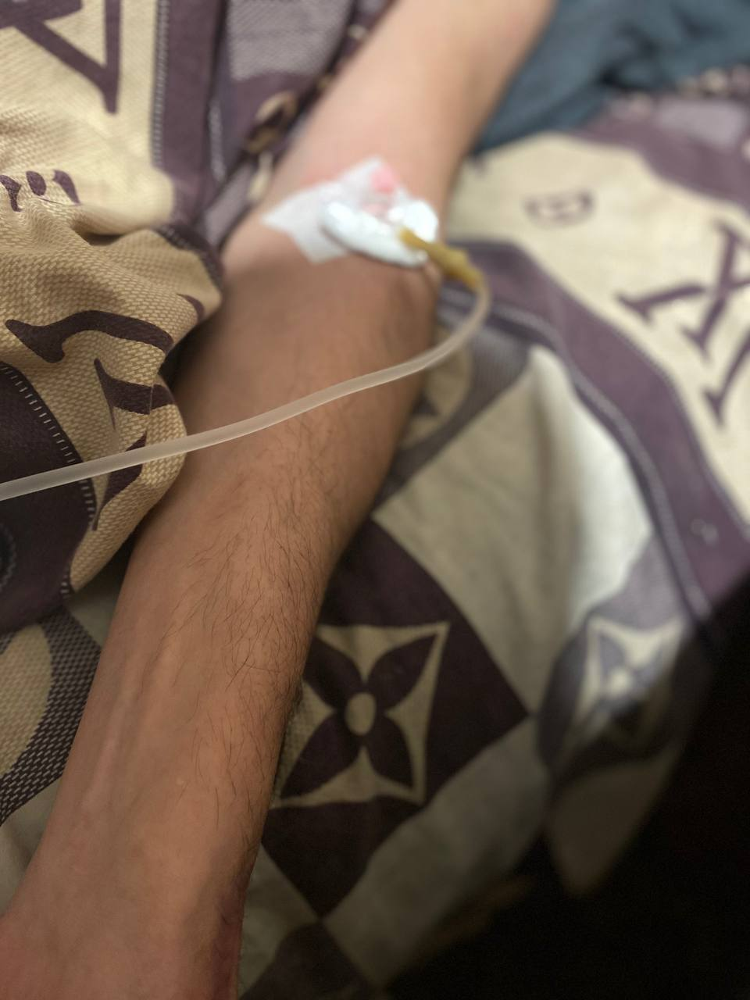

+380(97) 369 76
65
+380(97) 369 76
65Капельница от алкоголя на дому в Харькове
Капельница от алкоголизма на дому - первый шаг в борьбе с проблемой
Работаем в Одессе, Киеве, Львове, Харькове, Днепре, Запорожье, Черноморске, Каменском


Бесплатная консультация, работаем круглосуточно 24/7
Капельница от алкоголизма на дому - первый шаг в борьбе с проблемой
Работаем в Одессе, Киеве, Львове, Харькове, Днепре, Запорожье, Черноморске, Каменском
Капельница от алкоголя на дому в Харькове - это популярный метод снятия алкогольной интоксикации с помощью инфузионной терапии. Врач-нарколог приезжает домой и ставит капельницу с детоксикационными и восстанавливающими организма растворами. Капельница от алкоголя на дому - это безусловно серьезная манипуляция которая выполняется только квалифицированным доктором с большим опытом работы в отделении интенсивной терапии. Капельница от алкоголя на дому самый эффективным метод борьбы с любым похмельем имеющий быстрый и высокоэффективным результат по улучшению самочувствия пациента уже через 15-20 минут после введения препаратов.
Прокапаться от алкоголя на дому - это старый проверенный метод в лечении алкогольной зависимости и похмелья с помощью которого можно вывести человека из любого запойного состояния. Прокапать от алкоголя на дому можно только в случаи если длительность запоя не превышает 3 недель а состояние пациента не требует срочной госпитализации.
Прокапаться от алкоголя - это народное название которое означает постановку очистительной капельницы для снятия алкогольной интоксикации. Прокапаться от алкоголя на дому можно в тех случаях когда объем выпитых напитков был слишком большой, а состояние пациента не требует срочной госпитализации. В ситуации длительной хронической алкогольной интоксикации постановка одной капельницы от алкоголя может быть недостаточной, в таких случаях пациенту проводится курс детоксикационной терапией с последующим таблетированным лечением.
Капельница после алкоголя на дому является доступным методом лечения симптомов алкогольной интоксикации и в сравнении с таблетками имеет самый высокий коэффициент эффективности. В Харькове капельницу после алкоголя может поставить врач нарколог по поводу того что пациент перебрал со алкоголем на кануне. Капельницу после алкоголя на дому ставят только при недлительной алкогольной интоксикации.
Если есть надобность в наркологической помощи на дому в Харькове - вы можете вызвать врача-нарколога для консультации и оказания квалифицированной наркологической помощи. Вызов доктора является анонимным , доктор приезжает на обычной машине с сумками нейтрального цвета без маркировки. Врач нарколог может проконсультировать вас или поставить капельницу для вывода из состояния острой или хронической интоксикации.
Алкогольная интоксикация вызывает ряд тяжелых патологических симптомов которые не всегда удается купировать таблетками или народными методами лечения похмелья. В таких случаях правильным решением будет поставить капельницу от алкогольной интоксикации на дому или в стационаре , эффективность капельницы обусловлено индивидуальным подбором симптоматического лечения для высокоэффективной борьбы с симптомами похмелья.
Алкогольная интоксикация это тяжелое патологическое состояние вызванное длительным употреблением спиртных напитков. Алкогольная интоксикация может быть опасна для здоровья и жизни пациента , в случаях когда оказание помощи подручными методами не дают эффекта самым правильным решением является вызвать врача нарколога для постановки капельницы от алкогольной интоксикации на дому.
Когда пациент находиться в длительной алкогольной интоксикации единственным правильным решением будет комбинированная инфузионная терапия, состав капельницы для алкоголиков должен быть комплексным и включать в себя препараты направленные на восстановление печени и поджелудочной , сердечно-сосудистой системы а так же поддержания нервной системы и нормализация сна. Капельница для лечения алкоголизма это собирательное понятие, состав капельницы всегда подбирается индивидуально.
Состав капельницы подбирается индивидуально под симптоматику пациента , но в классической наркологии используют такие препараты:
Цена на капельницу от алкоголя на дому в Харькове начинается от 1699 грн и может меняться в зависимости от длительности и тяжести алкогольной интоксикации.
Самый эффективный метод снятия алкогольной интоксикации, запоя и похмелья это установка капельницы. Она оказывает комплексное лечебное воздействие на организм пациента , помогая восстановиться электролитный баланс , нормализовать работу внутренних органов и систем. Медицинская служба UmbrellaPlus Безопасная наркология работает в городе Харьков и помогает в борьбе с любой интоксикацией. В UmbrellaPlus безопасная наркология можно получить комплексную помощь при запои а так же хорошую длительную кодировку от алкоголизма.
Вывод из запоя на дому в Харькове - это самый популярная услуга которая требует участие только самого грамотного нарколога что бы обеспечить полную безопасность и комплексную помощь пациенту. Вывод из запоя на дому происходит с помощью антиоксидантов и детоксикационных растворов , комбинированной капельницы и последующим таблетированным лечением для полного вывода и восстановления организма пациента после запоя.
Для выведения из запойного состояния вам нужно пить побольше щелочной воды , принять сорбенты а так же аминокислоты. В случаях когда купировать запойное состояния самостоятельно не получается стоит обратится к наркологу. В городе Харьков вы можете получить комбинированную медицинскую наркологическую помощь в медицинской службе UmbrellaPlus Безопасная наркология. Что бы получить консультацию врача нарколога вам нужно позвонить по номеру 050-021-69-57.
Для вывода из запоя на дому народными средствами мы рекомендуем использовать -
Главным противопоказанием к постановке капельницы от алкоголя на дому является:
Любой запой всегда будет опасным для здоровья человека. Что бы обратиться к наркологу в городе Харьков вам нужно позвонить по номеру 050-021-69-57
Анонимно

"Никакими усилиями самостоятельно я не смогла преодолеть запой, и наступала ломка, сопровождаемая повышенным давлением и пульсом. Тогда я решила обратиться за помощью в клинику. Врачи оказали мне неоценимую поддержку! Уже прошел месяц, и я не только не употребляю алкоголь, но даже не испытываю к нему желания!"
Анонимно
"Могу с уверенностью порекомендовать данный центр для тех, кто ищет помощь при выводе из запоя. Я неоднократно обращался к ним и могу сказать, что цена соответствует качеству услуг. После проведения капельницы в клинике, вся тяга к алкоголю проходит, и я чувствую себя гораздо лучше. Это действительно эффективный метод, и я благодарен клинике за их профессионализм и заботу!"
Анонимно
"Я очень благодарен за то, что вы помогли мне разобраться с моей проблемой алкоголизма и найти ее решение. Давно осознавал, что без помощи профессионалов я не справлюсь, и я не ошибся, выбрав ваш центр Амбрелла. Здесь действительно предоставляется профессиональная помощь, которая оказалась для меня реальным спасением. Огромное спасибо за вашу поддержку и заботу!"
Анонимно
"Неоднократно я пытался бросить алкоголь самостоятельно, но каждый раз уговаривал себя продолжать. Я сначала ограничивался одной бутылкой в день, потом двумя, и в итоге вновь попадал в запой. Но в итоге, я смог прекратить употребление алкоголя только после того, как обратился в центр Амбрелла и заказал у них услугу вывода из запоя. Уже не пью 3 месяца и удалось полностью восстановиться. Благодарю врача который меня вел - Алексея Валерьевича"
Анонимно
"Здравствуйте! Я хотел бы выразить свою искреннюю благодарность клинике за быстрое и профессиональное освобождение моего мужа пивного рабства! Ранее у меня уже не было никаких надежд на его выздоровление. Однако, благодаря вашим перспективным методам лечения, мы теперь идем к полному отказу от алкоголя. Вы дали нам новую надежду и оказали неоценимую помощь! Спасибо вам за все!"
Анонимно
"Я долгое время страдал от запоев и не мог справиться с этой проблемой. Однако, когда я обратился в этот центр, они быстро помогли мне вернуться на ноги, и самое главное - предоставили мне возможность не возвращаться к запоям. Уже почти полгода я не испытываю запоев! Это для меня настоящее чудо, я никогда не думал, что смогу так преодолеть свои проблемы. Большое спасибо центру Амбрелла!"
Анонимно
"Благодарю ваш центр Амбрелла за оперативное и высококачественное лечение! Женский алкоголизм - это настоящее горе, с которым невозможно справиться в одиночку. Я уже потеряла надежду, но благодаря вашей помощи, она вернулась ко мне! Отдельная благодарность врачу Станиславу Вячеславовичу, а также благодарность Богу за то, что он послал мне такое чудо как ваша центр! Спасибо вам всем!"
Анонимно
"Хочу выразить благодарность врачу Владиславу Алексеевичу за то, что вы избавили меня от этого ужаса. Я уже был в отчаянии, перепробовал множество клиник и центров, но только здесь я наконец получил настоящую помощь! Алкоголь полностью разрушил меня, и если бы не ваша помощь, я, возможно, уже не был бы жив. С вами я смог вернуть себе жизнь и буду благодарен вам всегда!"
Приезд в течении 60 минут от момента поступления заявки
Наши филиалы есть во всех больших городах Украины.
Мы оказываем профессиональную доказательную медицинскую помощь. Гарантией является наше имя.
Номер телефона:
+380 (97) 369 76 65
+380 (50) 021 69 57
Адрес главного офиса: г. Харьков ул. Сумская 47
Офис вашего города нужно
уточнить
Работаем в: Одессе, Киеве, Львове, Харькове, Днепре,
Запорожье
Telegram: t.me/umbrellaplus
График работы: Круглосуточно